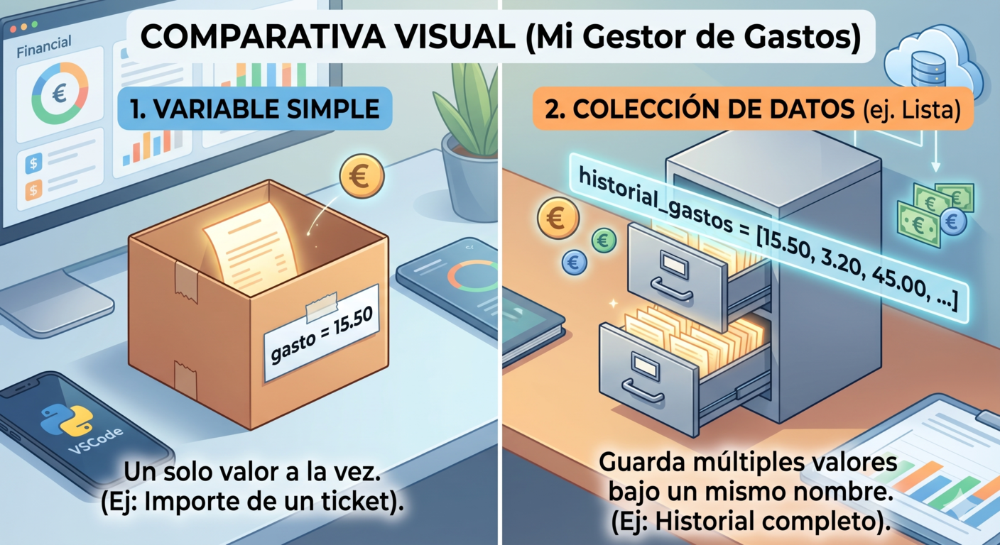

1. Introducción

A lo largo de los apartados anteriores hemos utilizado las variables como "cajas de mudanza" para guardar nuestros datos. Sin embargo, estas cajas tienen un pequeño problema: solo pueden guardar una cosa a la vez. En la vida real los programas manejan colecciones de datos: todos los gastos del mes, las categorías disponibles, el resumen por tipo de gasto...
Imagina que quieres registrar 30 gastos en tu Gestor. ¿Crearías 30 variables distintas? gasto1, gasto2, gasto3... Claramente no. Para eso existen las estructuras de datos: contenedores que te permiten agrupar múltiples valores bajo un mismo nombre y trabajar con ellos de forma organizada y eficiente.
Python ofrece cuatro estructuras de datos fundamentales, cada una diseñada para una situación distinta.
¿Quieres saber más sobre las estructuras?
![La imagen muestra cuatro tarjetas de colores que representan las estructuras de datos principales de Python: la lista en azul, ordenada, modificable y que permite duplicados; la tupla en morado, ordenada e inmutable; el diccionario en ámbar, ordenado y modificable pero con claves únicas; y el conjunto en rojo, sin orden y sin duplicados. En la parte inferior se indica cuándo usar cada una en el Gestor de Gastos: la lista para importes, la tupla para categorías fijas, el diccionario para totales por categoría y el conjunto para categorías únicas.](../content/resources/comparativa_estructuras_datos_large.svg "Estructuras de datos")
Elegir la estructura adecuada para cada situación es una de las decisiones más importantes que tomarás como programador. A lo largo de este bloque conocerás cada una de ellas y aprenderás cuándo usar cada una en tu Gestor de Gastos.
2. Datos en equipo: listas y tuplas
Una lista es una colección ordenada de elementos que puedes modificar en cualquier momento: añadir nuevos datos, eliminar los que ya no necesitas o cambiar cualquier valor. En tu Gestor de Gastos, una lista es perfecta para almacenar todos los importes del mes:
# Crear una lista de gastos
gastos = [45.50, 32.00, 18.75, 120.00, 9.99]
# Acceder a un elemento por su posición (índice desde 0)
print(gastos[0]) # 45.50 — el primero
print(gastos[-1]) # 9.99 — el último
# Añadir un nuevo gasto
gastos.append(67.30)
# Eliminar un gasto
gastos.remove(32.00)
# Longitud de la lista
print(len(gastos)) # Número de gastos registrados
# Recorrer todos los gastos
for gasto in gastos:
print(f"{gasto} €")¿Y una tupla?
Una tupla es igual que una lista pero inmutable: una vez creada no puedes modificarla. Úsala cuando los datos no deben cambiar, como las categorías disponibles del sistema:
# Tupla de categorías fijas del gestor
CATEGORIAS = ("comida", "transporte", "ocio", "casa", "salud")
print(CATEGORIAS[0]) # comida
print(len(CATEGORIAS)) # 5
# Esto daría error: las tuplas no se pueden modificar
# CATEGORIAS.append("viajes") ❌¿Listas o Tuplas?
¿Lista o tupla? Usa una lista cuando los datos van a cambiar a lo largo del programa. Usa una tupla cuando los datos son fijos y no deben modificarse. Las tuplas además son más rápidas y consumen menos memoria.

3. Para saber más
Puedes consultar estos dos recursos oficiales para conocer más sobre las listas y tuplas.
4. Practicamos lo aprendido
Elija la respuesta correcta
Has completado la actividad. Revisa las preguntas en las que has fallado y vuelve al apartado 7.1 Datos en equipo: listas y tuplas para repasar los métodos que no tengas del todo claros. Recuerda que puedes repetir la actividad todas las veces que necesites. ¡Sigue practicando!


5. Más estructuras: dict y set
Las listas están genial para guardar un historial de números, pero a veces la información es un poco más compleja. Imagina que quieres guardar un gasto, pero no solo el importe, sino también el concepto ("Café") y la categoría ("Desayuno"). Si metes todo eso en una lista normal, luego te será muy difícil saber qué es cada cosa.
Para estos casos, Python nos ofrece dos colecciones muy especiales: los Diccionarios y los Conjuntos.
- Diccionarios — datos con etiqueta
Un diccionario almacena pares clave-valor: en lugar de acceder a los datos por su posición como en una lista, accedes por su nombre. Es perfecto para organizar los gastos por categoría:
# Crear un diccionario de gastos por categoría
gastos_categoria = {
"comida": 120.50,
"transporte": 45.00,
"ocio": 80.75,
"casa": 350.00
}
# Acceder a un valor por su clave
print(gastos_categoria["comida"]) # 120.50
# Añadir o modificar una entrada
gastos_categoria["salud"] = 60.00
# Recorrer el diccionario
for categoria, total in gastos_categoria.items():
print(f"{categoria}: {total} €")Para saber más sobre Diccionarios, consulta w3Schools.
- Conjuntos — sin repeticiones
Un conjunto almacena elementos únicos y sin orden. Su gran utilidad es eliminar duplicados automáticamente y realizar operaciones entre grupos. En el Gestor te sirve para obtener las categorías que has usado sin repetición:
# Categorías de todos los gastos registrados (con repetidos)
cats_registradas = ["comida", "ocio", "comida", "casa", "ocio", "comida"]
# Convertir a conjunto elimina los duplicados
cats_unicas = set(cats_registradas)
print(cats_unicas) # {'comida', 'ocio', 'casa'}
# Operaciones entre conjuntos
presupuestadas = {"comida", "casa", "transporte", "salud"}
sin_gastar = presupuestadas - cats_unicas # Categorías no usadas aún
print(sin_gastar) # {'transporte', 'salud'}Para saber más sobre Conjuntos, consulta w3Schools.
6. Practicamos sobre diccionarios y conjuntos
7. El Gestor toma forma
Hasta ahora tu Gestor de Gastos pedía datos al usuario y los mostraba, pero no los guardaba. Ha llegado el momento de darle memoria. En esta actividad vas a construir una versión mejorada que almacena todos los gastos en una lista, lleva el total por categoría en un diccionario y usa una tupla con las categorías disponibles para validar la entrada del usuario.
Para ello, sigue los siguientes pasos:
- Define una tupla con las categorías disponibles: ("comida", "transporte", "ocio", "casa", "salud")
- Crea una lista vacía para almacenar los gastos y un diccionario vacío para el total por categoría.
- Muestra un menú con bucle while que ofrezca estas opciones:
-
- Opción 1 — Registrar gasto: pide importe y categoría. Si la categoría no está en la tupla, avisa al usuario y no registra el gasto. Si es válida, añade el gasto a la lista como diccionario {"importe": x, "categoria": y} y acumula el importe en el diccionario de totales.
- Opción 2 — Ver todos los gastos: recorre la lista y muestra cada gasto con su importe y categoría.
- Opción 3 — Ver resumen por categoría: recorre el diccionario de totales y muestra cuánto se ha gastado en cada categoría.
- Opción 4 — Categorías usadas: usa un conjunto para mostrar qué categorías se han usado sin repetición.
- Opción 5 — Salir.
Pistas
- Para añadir un gasto como diccionario a la lista usa gastos.append({"importe": importe, "categoria": categoria})
- Para acumular en el diccionario de totales: if categoria in totales: totales[categoria] += importe y else: totales[categoria] = importe
- Para obtener las categorías usadas sin repetición: set([g["categoria"] for g in gastos])
- La salida de tu programa debería ser similar a esta:
=== MENÚ DEL GESTOR ===
Categorías disponibles: comida, transporte, ocio, casa, salud
1. Registrar gasto
2. Ver todos los gastos
3. Ver resumen por categoría
4. Ver categorías usadas
5. Salir
Elige una opción: 1
Importe: 45.50
Categoría: comida
Gasto registrado correctamente.
Elige una opción: 1
Importe: 30.00
Categoría: viajes
Categoría no válida. Elige entre: comida, transporte, ocio, casa, salud
Elige una opción: 2
Listado de gastos:
- comida: 45.50 €
Elige una opción: 3
Resumen por categoría:
- comida: 45.50 €
Elige una opción: 4
Categorías usadas: {'comida'}
Elige una opción: 5
¡Hasta pronto! Tu gestor ha terminado.Mostrar Retroalimentación
# El Gestor toma forma — Solución orientativa
CATEGORIAS = ("comida", "transporte", "ocio", "casa", "salud")
gastos = [] # Lista de gastos
totales = {} # Diccionario de totales por categoría
while True:
print("\n=== MENÚ DEL GESTOR ===")
print(f"Categorías disponibles: {', '.join(CATEGORIAS)}")
print("\n1. Registrar gasto")
print("2. Ver todos los gastos")
print("3. Ver resumen por categoría")
print("4. Ver categorías usadas")
print("5. Salir")
opcion = input("\nElige una opción: ")
if opcion == "1":
importe = float(input("Importe: "))
categoria = input("Categoría: ").lower()
if categoria not in CATEGORIAS:
print(f" Categoría no válida. Elige entre: {', '.join(CATEGORIAS)}")
else:
gastos.append({"importe": importe, "categoria": categoria})
if categoria in totales:
totales[categoria] += importe
else:
totales[categoria] = importe
print(" Gasto registrado correctamente.")
elif opcion == "2":
if not gastos:
print(" No hay gastos registrados todavía.")
else:
print(" Listado de gastos:")
for g in gastos:
print(f" - {g['categoria']}: {g['importe']} €")
elif opcion == "3":
if not totales:
print(" No hay gastos registrados todavía.")
else:
print(" Resumen por categoría:")
for cat, total in totales.items():
print(f" - {cat}: {total:.2f} €")
elif opcion == "4":
if not gastos:
print(" No hay categorías usadas todavía.")
else:
usadas = set([g["categoria"] for g in gastos])
print(f" Categorías usadas: {usadas}")
elif opcion == "5":
print(" ¡Hasta pronto! Tu gestor ha terminado.")
break
else:
print(" Opción no válida. Elige entre 1 y 5.")¿Tu programa no funciona? Comprueba esto:
- ¿Has definido la tupla CATEGORIAS antes del bucle?
- ¿Usas not in para validar la categoría antes de registrar?
- ¿Compruebas si la categoría ya existe en totales antes de sumar?
- ¿El break está dentro del elif opcion == "5"?
- ¿Usas .lower() al leer la categoría para evitar problemas con mayúsculas?
Reto extra
Añade una opción 6 que muestre el gasto más alto registrado usando max() sobre la lista de gastos.
8. Importante
Listas []
Son colecciones ordenadas y modificables. Se crean con corchetes y nos permiten añadir elementos en cualquier momento utilizando funciones como .append().
Tuplas ()
Son colecciones ordenadas pero inmutables. Se crean con paréntesis y se utilizan para almacenar información que no debe ser alterada durante la ejecución del programa.
Las posiciones (índices)
¡Ojo a este detalle informático! Tanto en las listas como en las tuplas, el primer elemento no ocupa la posición 1, sino la posición 0. Si quieres ver el primer mes de tu tupla escribirías: print(meses_año[0])
Diccionarios {clave: valor}
Colecciones que asocian una etiqueta (clave) a una información (valor). Son mutables, por lo que puedes añadir nuevas etiquetas o modificar las existentes en cualquier momento.
Conjuntos {valor}
Colecciones desordenadas que tienen una regla de oro: todos sus elementos deben ser únicos. Si añades un dato que ya existe, el conjunto simplemente lo ignora.
Cuidado con las llaves
Tanto los diccionarios como los conjuntos utilizan las llaves {}. La diferencia visual radica en que el diccionario siempre lleva dos puntos (:) separando la clave del valor.